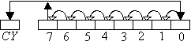
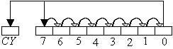

| ||||||
|
| ||||||
|
Операция
(ее код) |
Мнемоника |
Действие |
Флаги |
|
Формат
команда-2 байта |
. |
. |
. |
|
Логическое
”И” |
ANI v |
(A)¬(A) ^r |
Z,S,P;AC=A(3);CY=0 |
|
Исключающее
“ИЛИ” |
XRI v |
(A)¬(A)"v |
Z,S,P;AC=CY=0 |
|
Логическое
”ИЛИ” |
ORI v |
(A)¬(A) V v |
. |
|
Сравнение |
CPI v |
(A) - v |
Всё |
|
Формат
команда-1 байта |
. |
. |
. |
|
Логическое
”И” (поразрядная
коньюкция) |
ANA
r AMA
M |
(A)¬(A) ^ (r) (A)¬(A) ^ (M) |
Z,S,P;AC=A(3);CY=0 |
|
Исключающее
“ИЛИ” (поразрядное
сложение по mod 2) |
XRA
r XRA
M |
(A)¬(A) "(r) (A)¬(A) "(M) |
Z,S,P;AC=CY=0 |
|
Логическое
”ИЛИ” (поразрядная
дизъюкция) |
ORA
r ORA
M |
(A)¬(A) V(r) (A)¬(A) V (M) |
. |
|
Сравнение (без
записи результата) |
CMP
r CMP
M |
(A)-(r) (A)-(M) |
Всё |
|
Инверсия
аккумулятора |
CMA |
(A)
¬ (A) |
Нет |
|
Инверсия
переноса |
CMC |
(CY)
¬ (CY) |
CY |
|
Установка
переноса |
STC |
(CY) ¬1 |
. |
|
Циклический
сдвиг влево (07) |
RLC |
 |
CY=A (7) |
|
Циклический
сдвиг вправо (0f) |
RRC |
 |
CY=A (0) |
|
Арифметический
сдвиг влево (17) |
RAL |
|
CY=A (7) |
|
Арифметический
сдвиг вправо (1F) |
RAR |
|
CY=A (0) |
Коды логических операций
|
Операция |
Операция с регистром r или ячейкой M |
Операция
с байтом данных |
|||||||||
|
Мнемоника |
Регистр-источник(…) |
Мнемоника |
Код |
||||||||
|
B |
C |
D |
E |
H |
L |
M |
A |
||||
|
Логическое ”И” |
ANA … |
A0 |
A1 |
A2 |
A3 |
A4 |
A5 |
A6 |
A7 |
ANI v |
E6 |
|
Исключающее “ИЛИ” |
XRA … |
A8 |
A9 |
AA |
AB |
AC |
AD |
AE |
AF |
XRI v |
EE |
|
Логическое ”ИЛИ” |
ORA … |
B0 |
B1 |
B2 |
B3 |
B4 |
B5 |
B6 |
B7 |
ORI v |
F6 |
|
Сравнение |
CMP … |
B8 |
B9 |
BA |
BB |
BC |
BD |
BE |
BF |
CPI v |
FE |
|
| ||||||
|